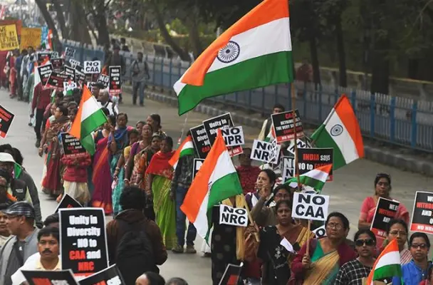
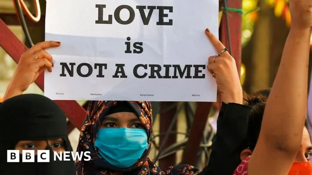

Overview
Team Members: Lea Karian, Jackson Flagg, Benjamin Franc, Abdullah Al-Qahtani, Kaelan Yim
Website Creator: Kaelan
This project explores the complex issue of Islamophobia in India, looking at its historical roots, how it shows up today, and the social and political forces that keep it alive. We take a close look at laws, political discourse, media coverage, and economic conditions to better understand the challenges Muslim communities in India face.
Why India?
India has one of the world's largest Muslim populations and is a complex landscape of different ideologies, creating a perfect case study for understanding Islamophobia in a Democratic context.
Country Profile of India
Researcher: Ben
Population: Approximately 1.4 billion people.
Religious Composition: Muslims make up around 15% of the population, making India the country with the 3rd largest Muslim population globally. Hinduism constitutes the vast majority.
Major Cities: Mumbai, Delhi, Bengaluru are among the largest urban centers.
Historical Context: India has always been characterized by its diversity. Significant events shaping Hindu-Muslim relations include the partition of India and Pakistan in 1947, which led to widespread communal violence, and the demolition of the Babri Masjid in 1992.
Muslim Contribution: Muslims have significantly contributed to India’s rich cultural and architectural heritage, including landmarks like the Taj Mahal and Qutub Minar. They have also enriched Indian cuisine, literature (particularly Urdu poetry and prose), and various other aspects of society.
Diversity within Muslim Population: The Muslim population in India is diverse. While the majority are Sunni, there is a substantial Shia minority (e.g., in Lucknow) and various distinct communities like the Dawoodi Bohras and Ahmadiyyas.
History / Origins of Islamophobia in India
Researcher: Abdullah
Islamophobia in India has deep historical roots dating back to British colonial rule, which entrenched communal divisions through a policy known as "divide and rule." British colonial administrators systematically classified and treated Hindu and Muslim populations as separate political entities, which made the existing communal identities and tensions worse. This divide intensified during the partition of India and Pakistan in 1947, which was a traumatic event marked by widespread communal violence, resulting in nearly a million deaths and the displacement of approximately 15 million people (Talbot & Singh, 2009).
Post-independence, intermittent conflicts and political rhetoric often reignited anti-Muslim sentiment. Notable incidents include the destruction of the Babri Masjid in 1992 by Hindu nationalist mobs, which led to nationwide riots, significantly shaping contemporary Hindu-Muslim dynamics (Brass, 2003). The rise of Hindu nationalism, particularly the growing influence of organizations like the Rashtriya Swayamsevak Sangh (RSS), has further entrenched Islamophobia by propagating the notion that India should be primarily a Hindu nation, viewing Muslims as cultural outsiders and a threat to Indian national identity.
Political Figures that use Islamophobia in Electoral Campaigns
Researcher: Lea
In Indian politics, Islamophobic rhetoric has become a deliberate strategy for electoral gain, especially among right-wing leaders affiliated with the Bharatiya Janata Party (BJP) and its ideological parent, the Rashtriya Swayamsevak Sangh (RSS). Prime Minister Narendra Modi has repeatedly come under scrutiny for his role in fostering anti-Muslim sentiment, from his longstanding association with the 2002 Gujarat riots to more recent speeches portraying Muslim communities as a demographic threat or as outsiders to Indian culture. BJP leaders like Yogi Adityanath, the Chief Minister of Uttar Pradesh, have openly referred to Muslims as “infiltrators” and have endorsed policies that disproportionately target Muslim populations, such as the so-called “love jihad” laws: measures based on the conspiracy theory that Muslim men seduce Hindu women in order to convert them to Islam. In 2018, Home Minister Amit Shah referred to undocumented Muslim migrants as “termites”, and another BJP politician, Kapil Mishra, was accused of inciting anti-Muslim violence ahead of the 2020 Delhi riots following his inflammatory speech targeting anti-CAA protestors.
Media / Films / Images and Whether Islamophobia is Used
Researcher: Lea
Indian media—both entertainment and news—has played a significant role in normalizing and spreading Islamophobic narratives. In mainstream news coverage, Muslim voices are frequently excluded or vilified, especially in the context of protests or communal violence. Television anchors on major channels like Republic TV and Zee News have referred to Muslim protestors as “anti-nationals” and “jihadists,” further fueling public fear and suspicion. Bollywood also perpetuates harmful stereotypes, often portraying Muslim characters as terrorists, hypermasculine aggressors, or religious fanatics. Films like Roja (1992) portray Kashmiri Muslims primarily as violent separatists, embedding the idea of Muslim identity as a threat to national unity. More recently, movies like The Kashmir Files (2022) have drawn widespread criticism for their one-sided depictions of historical violence, reinforcing communal divisions rather than contextualizing them. Even visual imagery—such as exaggerated depictions of mosques, skullcaps, or Arabic calligraphy—is frequently used in thriller or action films and crime news segments to visually cue “danger” or “radicalism,” subtly teaching viewers to associate Islamic symbols with fear, violence, or foreignness.
Legal Restrictions on Muslim Citizens and Immigrants / Refugees
Researcher: Jackson
The Citizenship Amendment Act (CAA)
In 2019, India’s ruling Bharatiya Janata Party (BJP) passed the Citizenship Amendment Act (CAA), which fast-tracks citizenship for non-Muslim refugees from Pakistan, Afghanistan, and Bangladesh, while explicitly excluding Muslims. This exclusion reflects a longer historical trend where non-Muslim refugees were seen as India's responsibility, while Muslim migrants were viewed as outsiders (Kapur, 2021).
The CAA, combined with a proposed National Register of Citizens (NRC), raised fears that Indian Muslims could be rendered stateless. In the state of Assam, a similar screening process had already stripped over a million people of citizenship, the majority of whom were Muslims (Human Rights Watch, 2024).
Widespread protests against the CAA were met with significant police violence. Communal clashes erupted in New Delhi, resulting in 53 deaths, with most victims being Muslim. International organizations, including the United Nations, have criticized the CAA, deeming it discriminatory and a violation of India's human rights obligations (Human Rights Watch, 2024).


For more context, see this video from Human Rights Watch: India Brings Contentious Law Into Force (March 15, 2024)
Economic Restrictions: Bank Accounts, Business Loans, Travel, and Employment
Researcher: Jackson
Employment Discrimination
In India, Muslims face significant employment discrimination, which is often exacerbated when their religious identity is made visible through their names or appearance. A recent policy implemented in Uttar Pradesh and Himachal Pradesh requires restaurants to publicly display the names of all employees. Given that names in India often reveal religious affiliation, this policy has placed Muslim workers and business owners at heightened risk of targeted attacks, harassment, and economic boycotts (The Guardian, 2024).
Reports indicate that numerous Muslim workers have been fired as restaurant owners fear potential violence or boycotts from customers. Business owners have also reported facing pressure from police authorities to comply with the display rule, with enforcement disproportionately targeting Muslim-run establishments. Some owners have stated they felt compelled to lay off Muslim employees simply to avoid becoming targets themselves. Critics argue that this policy effectively forces Muslims to “wear their religion on their sleeve,” thereby increasing their vulnerability within a broader societal climate marked by rising anti-Muslim sentiment under the Bharatiya Janata Party (BJP) leadership.
Surveillance, Emergency Regulations, and Terrorism-Related Restrictions
Researcher: Lea
State surveillance and counterterrorism laws in India have increasingly been used to criminalize and suppress Muslim communities, often under the guise of maintaining national security. Laws like the Unlawful Activities (Prevention) Act (UAPA), originally passed in 1967 but significantly expanded in 2019 to allow individuals—not just organizations—to be labeled as terrorists without trial, grant the government sweeping detention powers. Muslim activists, journalists, and students have been among the groups most frequently charged under the UAPA's broad and vague definitions of “terrorism.” Emergency-era laws from the 1970s and their subsequent iterations have fostered a legal environment where dissent, particularly Muslim-led dissent, is readily framed as a security threat. More recently, the National Register of Citizens (NRC), completed in Assam in 2019, required residents to provide documentation to prove citizenship, a process that disproportionately impacted Muslims lacking formal papers. That same year, the Citizenship Amendment Act (CAA) was enacted, offering a pathway to Indian citizenship for non-Muslim refugees from neighboring countries while explicitly excluding Muslims, thereby embedding religious discrimination into law. Through a combination of surveillance tactics, legal intimidation, and restrictions on freedom of expression, the Indian state has contributed to normalizing the treatment of Muslim identity itself as a potential indicator of disloyalty or danger.
Organizations Countering Islamophobia
Researcher: Jackson
Despite the challenging environment, several organizations in India are actively working to counter Islamophobia through research, advocacy, and journalism.
Hindutva Watch: Founded by Raqib Hameed Naik, this research initiative monitors and meticulously documents hate crimes and hate speech targeting religious minorities across India. Hindutva Watch utilizes real-time data collection methods, analyzing videos, social media posts, and news reports to track and expose incidents of religiously motivated violence and discrimination (Hindutva Watch, 2024).
Muslim Mirror: An independent, non-profit news website founded by Syed Zubair Ahmad, Muslim Mirror focuses on providing journalism centered on issues affecting Muslims and other disadvantaged groups in India. Their work includes tracking specific cases of violence, debunking misinformation and propaganda, and actively challenging biased narratives often found in mainstream media coverage (Muslim Mirror, 2024).
Hindus for Human Rights (HfHR): Although based in the U.S., HfHR, co-founded in 2019 by activists including Sunita Viswanath and Raju Rajagopal, advocates for pluralism, civil rights, and human rights in both South Asia and North America, with a significant focus on India. Their methods involve organizing protests, holding press conferences, and launching campaigns to oppose discriminatory policies and actions targeting minorities in India (Hindus for Human Rights, 2024).

Success Cases and Positive Examples
Researcher: Abdullah
Despite significant challenges, there are notable success cases and positive examples of communal support and resistance against Islamophobia in India. One prominent example is the Shaheen Bagh protests of 2019-2020 in New Delhi, which were predominantly led by Muslim women. These sustained, peaceful sit-in protests against discriminatory legislation like the Citizenship Amendment Act (CAA) garnered nationwide and international attention. Shaheen Bagh became a powerful symbol of interfaith solidarity, drawing widespread support from various religious and social groups, showcasing the potential of peaceful civic activism to challenge discriminatory policies (Kazmin, 2020; Human Rights Watch, 2020).
Another significant example of communal harmony is often observed in Kerala, a state celebrated for its robust secular tradition and high literacy rates. During the devastating floods of 2018, numerous stories of Hindu-Muslim cooperation emerged. Mosques opened their doors to shelter Hindu families displaced by the floods, and temples offered refuge to Muslim residents, demonstrating how grassroots solidarity can transcend religious divides during times of crisis (Varma, 2018; Indian Express, 2018).
Furthermore, the Indian judiciary has occasionally played a role in checking potentially discriminatory practices. The Supreme Court of India has intermittently intervened to uphold constitutional principles. For instance, in certain cases related to the controversial state-level "love jihad" laws (which restrict interfaith marriages), courts have stepped in, emphasizing fundamental rights over potentially discriminatory narratives, although enforcement and legal challenges continue (BBC, 2021).

References
Country Profile
- Office of the Registrar General & Census Commissioner, India. (2011). Census of India 2011: Religion Data. Ministry of Home Affairs, Government of India. https://censusindia.gov.in/2011census/Religion_PCA.html
- Pew Research Center. (2017). The Future of World Religions: Population Growth Projections, 2010-2050. https://www.pewforum.org/2017/04/05/the-future-of-world-religions-population-growth-projections-2010-2050/
- Data. Ministry of Home Affairs, Government of India. https://censusindia.gov.in/2011census/Religion_PCA.html (Note: Duplicate link provided in source)
History/Origins
- Brass, P. R. (2003). The Production of Hindu-Muslim Violence in Contemporary India. University of Washington Press.
- Talbot, I., & Singh, G. (2009). The Partition of India. Cambridge University Press.
Political Figures
- Al Jazeera. (2018, September 24). BJP chief slammed for calling Bangladeshi migrants 'termites'. Al Jazeera. https://www.aljazeera.com/news/2018/9/24/bjp-chief-slammed-for-calling-bangladeshi-migrants-termites
- Mishra, I. (2024, March 27). Investigation against Kapil Mishra stayed after Delhi Police approach court. The Hindu. https://www.thehindu.com/news/cities/Delhi/investigation-against-kapil-mishra-stayed-after-delhi-police-approach-court/article69431758.ece
Media/Films/Images
- Al Jazeera. (2022, April 13). The dangerous truth of The Kashmir Files. Al Jazeera. https://www.aljazeera.com/opinions/2022/4/13/the-dangerous-truth-of-the-kashmiri-files
- Biswas, N. (2024, March 5). Bollywood’s depictions of Muslims over time have gone from good to ugly. TRT World. https://www.trtworld.com/opinion/bollywoods-depictions-of-muslims-over-time-have-gone-from-good-to-ugly-16662169
Legal Restrictions
- Human Rights Watch. (2024, March 15). India activates discriminatory citizenship law. Human Rights Watch. https://www.hrw.org/news/2024/03/15/india-activates-discriminatory-citizenship-law
- Kapur, M. (2021). India’s Citizenship (Amendment) Act. The Statelessness & Citizenship Review, 3(1), 208–235. https://doi.org/10.35715/SCR3001.1119
Economic Restrictions
- Ellis-Petersen, H., & Hassan, A. (2024, October 13). Muslims in India face discrimination after restaurants forced to display workers’ names. The Guardian. https://www.theguardian.com/world/2024/oct/13/muslims-in-india-face-discrimination-after-restaurants-forced-to-display-workers-names
Surveillance/Terrorism
- Amnesty International. (2023, November 3). India: Stop abusing counterterrorism regulations. Amnesty International. https://www.amnesty.org/en/latest/news/2023/11/india-stop-abusing-counterterrorism-regulations/
- Human Rights Watch. (2019, December 11). India: Citizenship bill discriminates against Muslims. Human Rights Watch. https://www.hrw.org/news/2019/12/11/india-citizenship-bill-discriminates-against-muslims
Countering Islamophobia
- Hindus for Human Rights. (2024). Hindus for Human Rights. Retrieved April 30, 2025, from https://www.hindusforhumanrights.org
- Hindutva Watch. (2024). Hindutva Watch. Retrieved April 30, 2025, from https://www.hindutvawatch.org
- Muslim Mirror. (2024). Muslim Mirror. Retrieved April 30, 2025, from https://muslimmirror.com/eng/
- (Note: Wikipedia was mentioned as a source in the notes but not formally cited for specific content in this section).
Success Cases
- BBC News. (2021, March 9). India 'love jihad': Court stays controversial Uttar Pradesh law. https://www.bbc.com/news/world-asia-india-56330206
- Human Rights Watch. (2020, April 10). “Shoot the Traitors”: Discrimination Against Muslims under India’s New Citizenship Policy. https://www.hrw.org/report/2020/04/10/shoot-traitors/discrimination-against-muslims-under-indias-new-citizenship-policy (Note: This covers protests like Shaheen Bagh)
- Kazmin, A. (2020, March 24). India clears site of Delhi protest against citizenship law. Financial Times. (Note: Example source for Shaheen Bagh, specific FT article may vary).
- Varma, S. (2018, August 22). Mosque offers shelter to Hindus in rain-hit Kerala. Indian Express. https://indianexpress.com/article/india/mosque-offers-shelter-to-hindus-in-rain-hit-kerala-5320581/